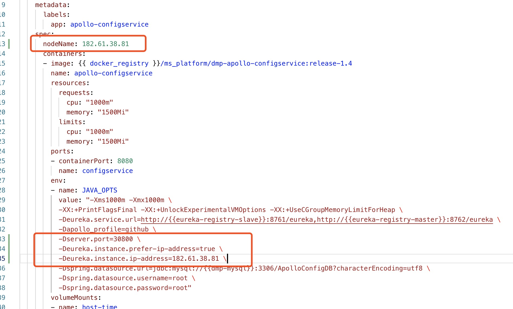

Apollo-ConfigSerivce In Docker/k8s
本文档主要讲解异地开发模式下，无法拉取DMP中配置中心的配置项的问题。
主要原因为：客户端填入的apollo.meta地址为Apollo中的Meta Server地址，该地址是类似于一个Eureka Proxy的地址，因此并不是真正的Apollo-ConfigService地址。客户端在通过该地址拉取配置信息的时候，Meta Server会从Eureka中查询Apollo-ConfigService或者DMP-Apollo-ConfigService（以下简称"ConfigService"）的实例列表。该列表实例中包含的IP可能是容器的IP。最终导致异地开发时拉取不了配置的问题。
解决办法：
方法1、可以参考 通过注解方式开启末尾的方式，直接指定Apollo-ConfigService的地址，让MetaDate Server跳过代理这一逻辑。
方法2、让Config Service启动的时候将运行该服务的宿主机IP或NodeIp注册至Eureka。同时保持容器（或者k8s）暴露的端口和宿主机端口保持一致即可。
步骤:
以下操作基于DMP提供的编排文件为例
1、首先确保Config Service启动时暴露的端口和NodePort端口一致：
查看service/dmp_svc.yml文件中对apollo-configservice定义的NodePort：

上面69行中默认定义的是30800端口，具体按照实际情况。
我们去修改depolyment/apollo.yml中的环境变量，将30800端口传入进去：
如图，在配置中添加一行配置：

2、指定ConfigService运行的Node:
比如NodeIp为182.61.38.81:

3、客户端拉取配置时指定apollo.meta地址为：
apollo.meta=http://182.61.38.81:30800
4、重启应用
重启apollo depolyment即可。
例如：
kubectl [-n your namespace] apply -f apllo.yml